Sketch & Prototype
Sketch concept variations; build a foam core mockup.
Class 3 · Week 3 · Fall 2026
Turn your robot sketches and measurements into a laser-ready 2D design — measure the real parts, model in Onshape, and cut at Nolop.
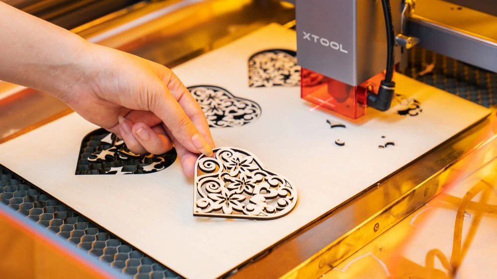
Robo Challenge · roadmap
Today we're at WK2 — laser cutting. Here's how the robot build comes together.
Sketch concept variations; build a foam core mockup.
Create a laser-ready 2D design; cut structural parts.
Model 3D parts; 3D print functional parts.
Wire motors, sensors, and controls; program with MicroPython + AI.
Connect to a wireless network; build a remote control interface.
Final integration and test runs.
Demonstrate the robot with mechanical systems and motors mounted.
WK2 · Laser Cutting — go from a foam core prototype to a laser-cut assembly: measure the real parts, draw them in Onshape, and cut.
Robo Challenge · today
Your foam core prototype proved the idea. Now we design the real parts.
Today's plan
Where we are in the build
Sketch and mockup are behind you. Today the design becomes a real, cut part — then we fabricate, assemble, and get on to electronics.
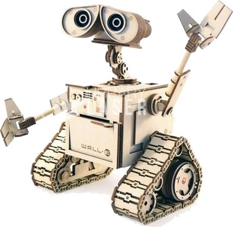
The making cycle
TwoD design sits between the mockup and the finished part — and the cycle repeats.
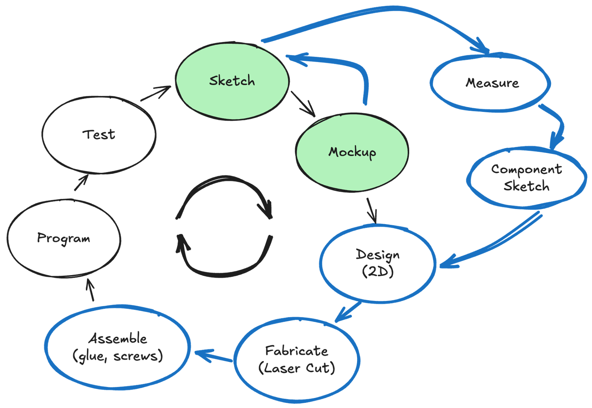
Every hole and every slot starts with a real number from a real part — never a guess.
Laser cutting works on flat stock, so think in 2D: flat panels that slot, bolt, or glue into a 3D object.
Cut a test part in cardboard before you commit a sheet of plywood to the design.
Before you design
Onshape is a CAD program that runs in your browser — nothing to install, and your work is always saved.
Do this now
Sign up with your Tufts account to get the free education plan.
onshape.com/en/education/sign-upIt runs in the browser on any laptop, keeps a version history of every change, and exports a DXF that the laser cutter can read.
Use your Tufts account — the education plan is free.
Read your sketch · 1 of 3
Looking straight down: the footprint of the robot, the wheel positions, and the mounting holes for the motors.
170 mm long and 60 mm wide set the sheet footprint of the whole assembly.
The hatched panels at each corner are the wheels, bolted through the base plate.
The two small squares are the motor housings — their spacing comes from the datasheet.
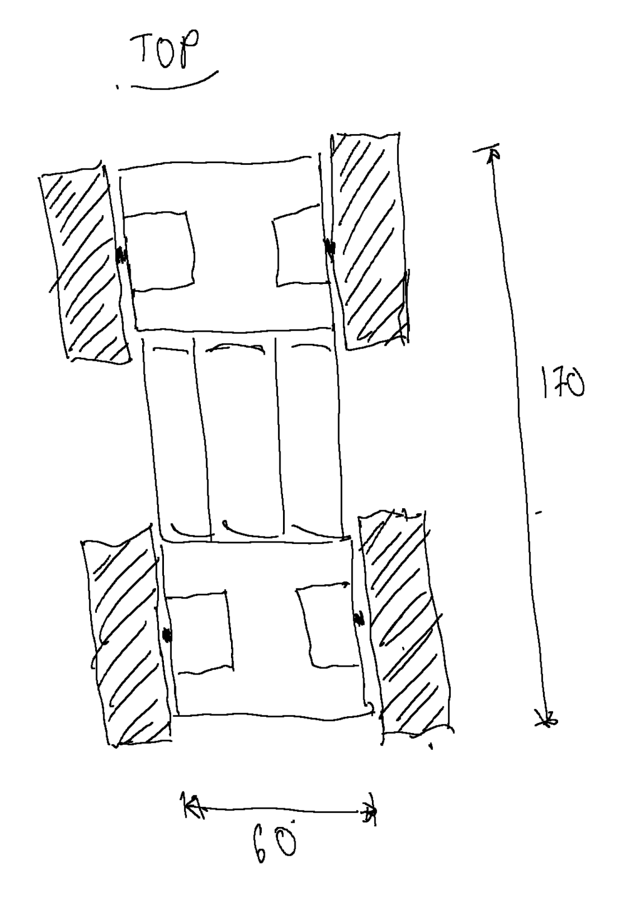
Read your sketch · 2 of 3
Looking from the side: how tall the body is, where the electronics sit, and how the wheel clears the deck.
45 mm of clearance under the deck for the electronics and the motor driver.
45 mm long and 60 mm wide — it decides where the electronics panel sits.
The wheel is the lowest point, so it sets how the chassis meets the ground.
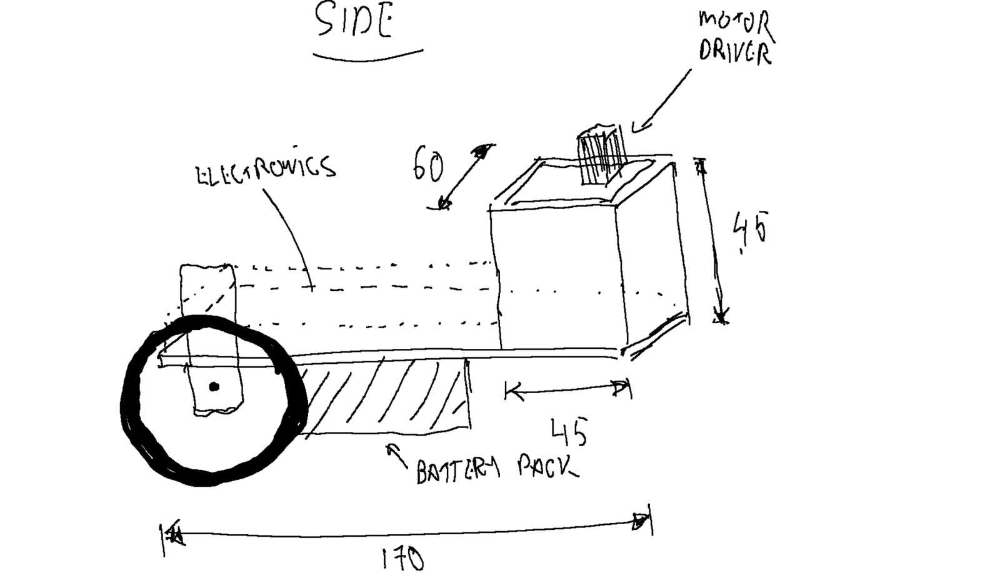
Read your sketch · 3 of 3
Small parts need the tightest numbers — the axle is where a loose hole turns into a wobbly wheel.
60 mm from the motor to the far wheel, held by 2 × M3 screws.
A Ø3 shaft hole and Ø3 mounting holes at 17.5 mm spacing — half of a 35 mm motor centre.
6 mm and 20 mm faces are the plywood thickness the slots have to match.
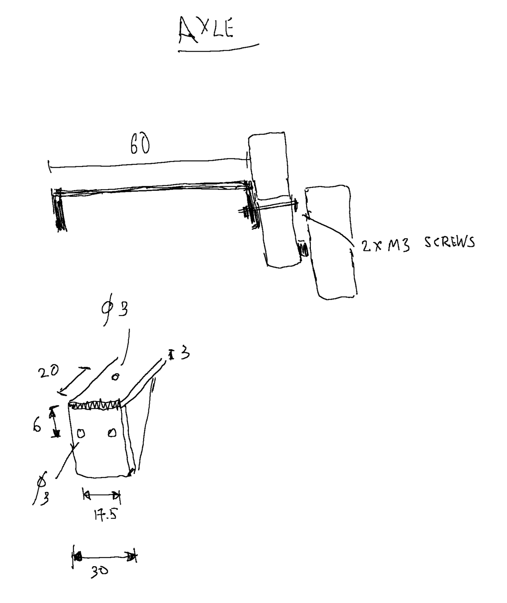
Numbers, not guesses · 1 of 2
Every part you bought came with a drawing. Use it — the manufacturer already measured the part for you.
The four numbers you need
Check the drawing for hole spacing before you draw the mount — that single number decides whether the motor fits.
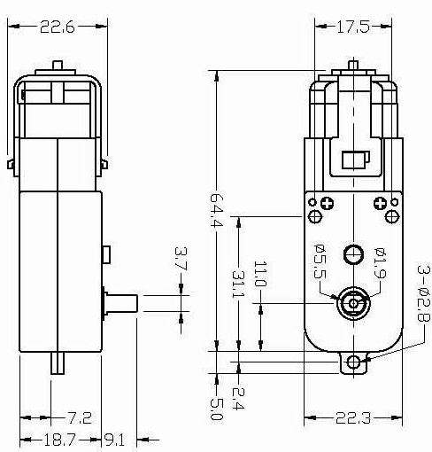
A TT motor datasheet — all the numbers for the mount are already here.
Numbers, not guesses · 2 of 2
When there's no datasheet, or the part is already in your hand, the caliper is the answer.
Measure the outside of a shaft, a wheel hub, or sheet thickness.
Measure the inside of a hole or a slot — the two small jaws at the top.
Reach into a bore to find how deep a part really sits — handy for the motor boss.
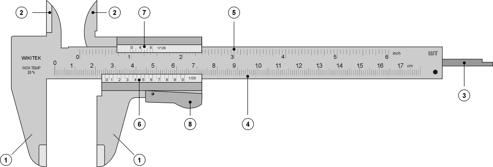
Tip
Measure twice, and write the number on the sketch before you open Onshape.
Holding it together · 1 of 2
Flat parts become a 3D object when you bolt them together — so your drawing needs the hole, not just the shape.
An M3 bolt needs a clearance hole around 3.2 mm in the parts it passes through — the head and the nut do the clamping.
Under the nut and the head, it stops the bolt from crushing soft plywood or cracking acrylic.
Threads only bite where there is a matching nut, so plan for access on both sides of the joint.
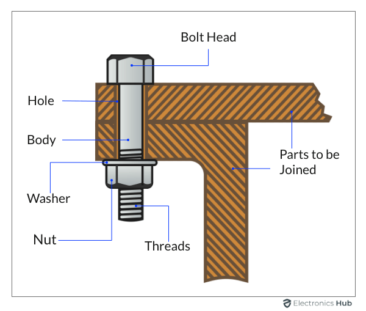
A bolted joint: head, hole, washer, nut, and threads.
Holding it together · 2 of 2
Two screw types you'll use on wood and acrylic — and the pilot hole each one needs.
Needs a pre-drilled pilot hole. The screw cuts its own threads as it goes in — a pilot hole slightly smaller than the screw keeps the wood from splitting.
Use it when the screw has to grip the material directly, with no nut on the far side.
Has a drill point on the tip. It drills its own hole and taps its own threads in one pass — no pilot hole needed.
Fast for thin sheet and soft material, but it can split thin plywood or crack acrylic.
You can't drill a hole with a laser — laser-cut a pilot hole slightly undersized and let the screw cut its own thread, or cut the clearance hole and use a bolt, washer, and nut.
Onshape design demo
Follow along in your own Onshape document — five shapes cover almost every part you'll cut.
In this demo
Right-click the sketch in the feature list and choose Export as DXF/DWG — that file goes to the laser cutter.
More videos
A longer Onshape playlist is on the class page and in the syllabus.
Laser cutting vs 3D printing · 1 of 2
Both are digital fabrication — but they remove material differently, so they suit different parts.
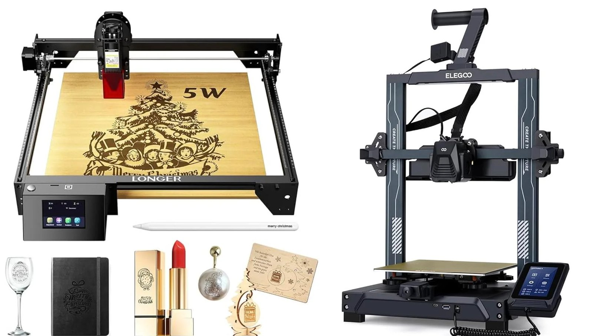
A laser cutter (left) and a 3D printer (right).
Laser cutting vs 3D printing · 2 of 2
Speed, cost, and finishing decide it — and often the answer is to use both.
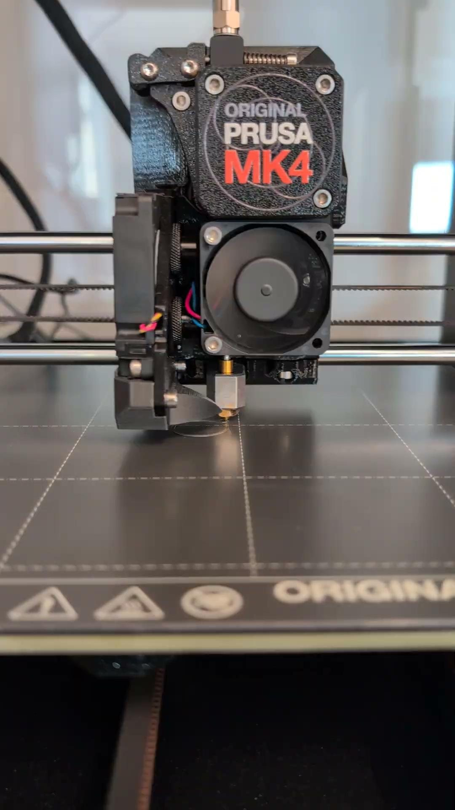
The 3D printer builds up; the laser cuts down.
Shortcut
Generate the panels, then take them into Onshape or straight to the laser.
Laser cut shape generator
Pick a box, a tray, or a living hinge, type your material thickness, and download an SVG.
boxes.hackerspace-bamberg.de/boxes.pyEvery finger joint is sized from the sheet thickness — measure it with your calipers first.
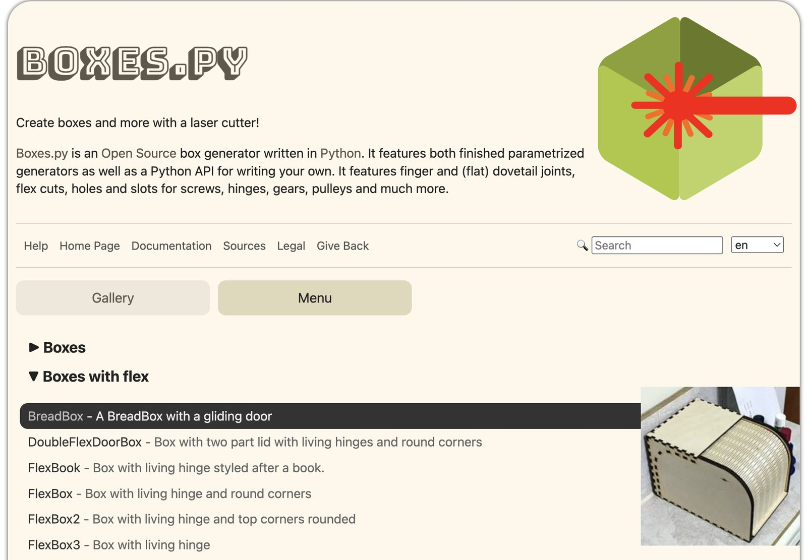
Boxes.py generates finger-jointed panels from your thickness.
Laser control software
The control software is both the design environment and the machine controller.
Vector and image files — SVG, DXF, AI, PDF, PNG, JPG, and more.
Scale, align, and add text so the job fits the sheet you actually have.
Say which lines are cuts and which areas are engraves, with their own speeds and power levels.
Where supported, it talks to the cutter directly — no separate driver step.
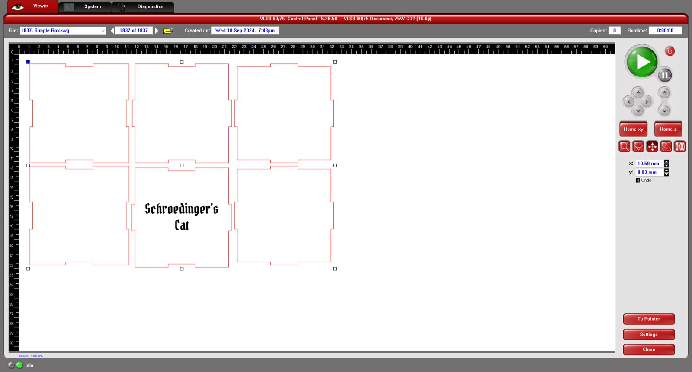
Red tool paths on the work plane, ready to send to the cutter.
At Nolop · laser cutting step by step 1–3
Your DXF will look wrong when it opens — that's normal. Three steps to make it cuttable.
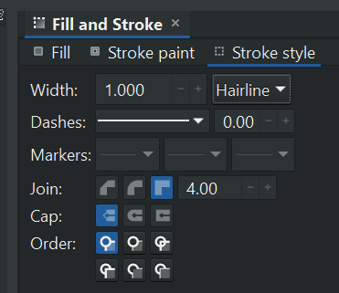
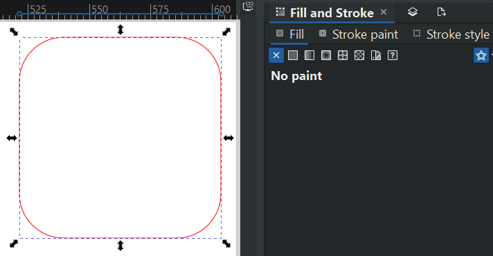
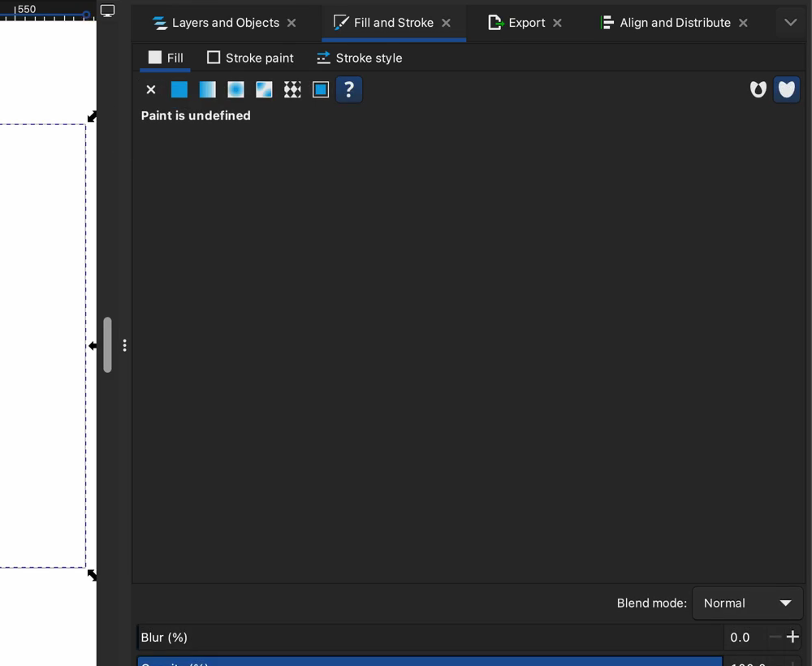
Cuts are 100% red. Scores are 100% blue. Engraves and text are 100% black. The laser reads colour, so anything in the wrong colour is the wrong operation.
At Nolop · laser cutting step by step 4–5
Inkscape is the editor; UCP runs the machine. Two steps to move between them.
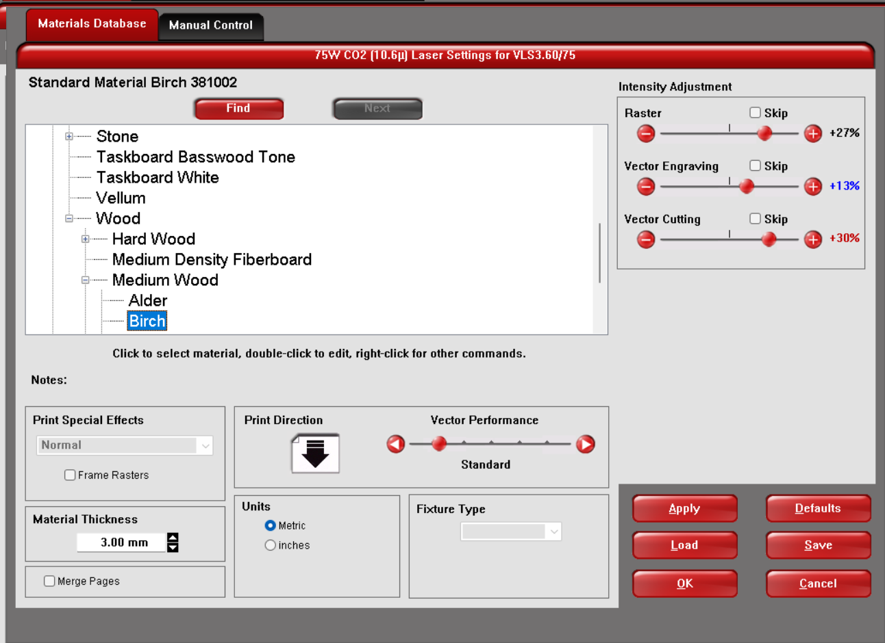
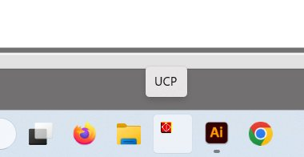
Confirm your drawing arrived complete — every cut line red, every score blue, every engrave black, nothing missing from the sheet.
At Nolop · laser cutting step by step 6–7
Save material, load the sheet, and press go.
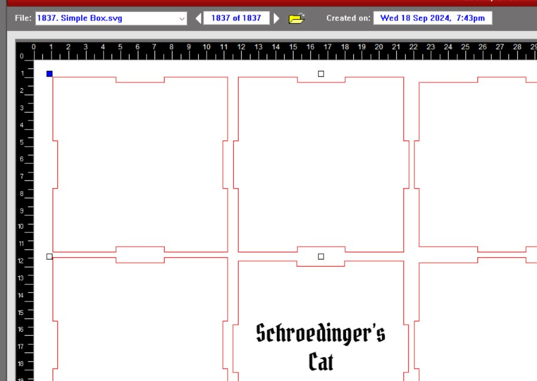
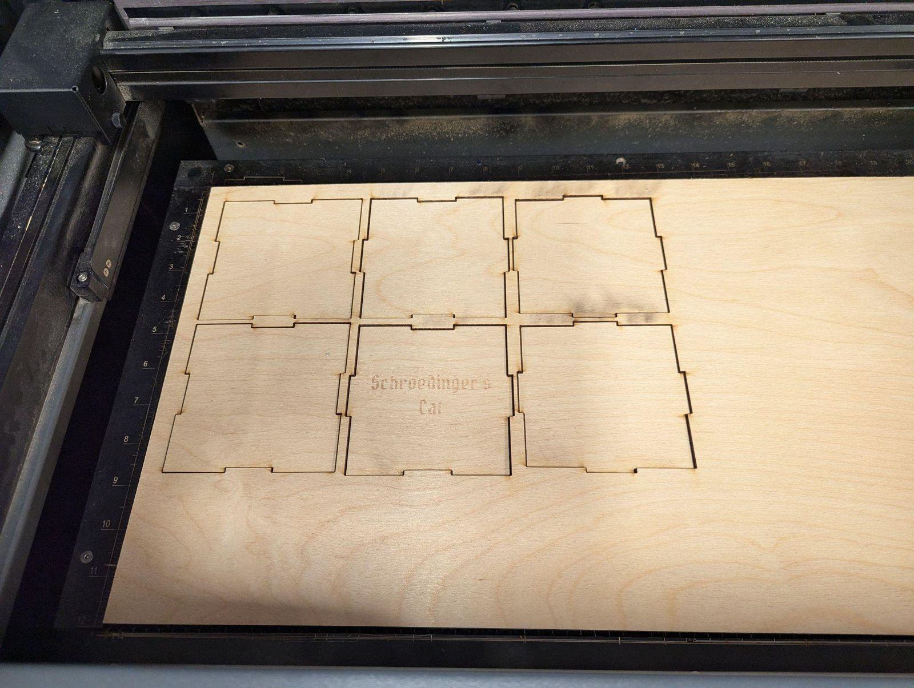
Know where the fire extinguisher and the emergency stop are before you press play — and stay with the machine until the job finishes.
In the lab
Flat sheets becoming real, structural objects — the same jump your robot parts make.
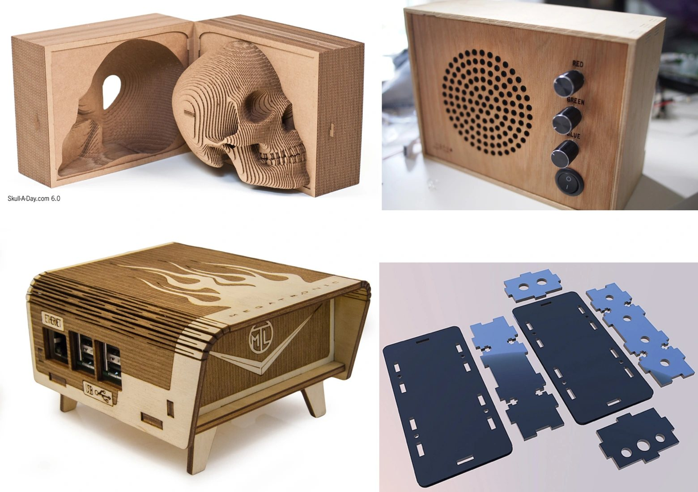
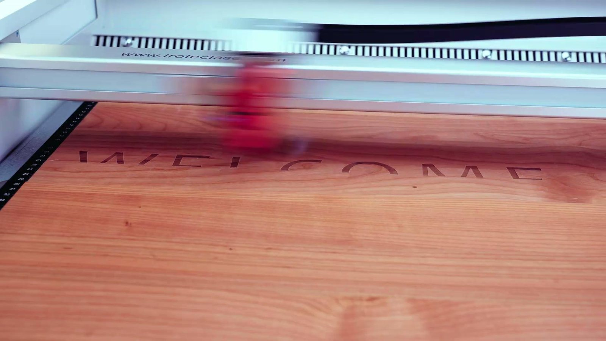
Individual assignment · 5 pts · due next week
Anything you like — as long as you designed the vector file and cut it yourself.
Draw your own vector file in Onshape — or start from a template you found, and remix it into something new.
Export the DXF, prepare it in Inkscape, and cut it at Nolop. Cut a cardboard test first.
Build the object — slots, glue, or bolts, washers and nuts.
Submit your vector design files and upload photos of what you created. Bring the assembled object to class for a demo.
Submit your end-of-class reflection at go.tufts.edu/reflect
The full walkthrough — install Inkscape, import your DXF, set the colours, run UCP — is at tuftsmaker.github.io/ENT-164/laser-cutting/
By the end of class
Before you leave, complete your personal reflection for today's class.
go.tufts.edu/reflectBefore you go
Next week: 3D Printing — model 3D parts in Onshape, prepare them in PrusaSlicer, and print the functional parts your robot needs.
Where to find us
Office hours
go.tufts.edu/meet_tvdv
Email
thomas.van_de_velde@tufts.edu
Course materials
tuftsmaker.github.io/ENT-164